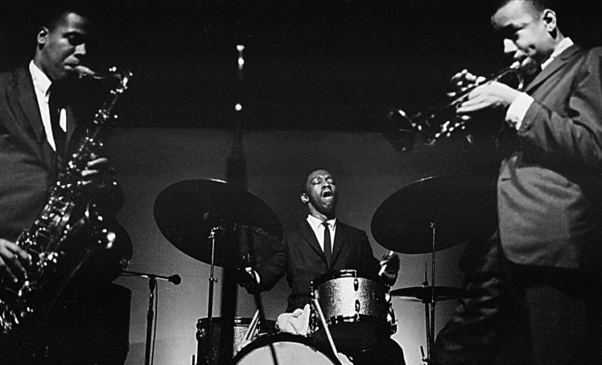

Why Jazz is dying?
 Madiyar Aubakirov ( Redactor )
October 18, 2020
Madiyar Aubakirov ( Redactor )
October 18, 2020
What comes on your mind when you hear the word 'Jazz'. Some people will say it is an old genre, some will probably say that they heard about it, some even will not understand that word. However a couple decades ago it was phenomenal music. Now it's just weird mix of instruments. So why the genre that was super popular became misunderstood?

First of all, other new developing music. Each decade, each generation has their own favorite music. 90th had gangsta rap and Nirvana, 60th had Elvis, 70th had The Beatles and The Rolling Stones and now we have Travis Scott. Every older generation hated their children's music and loved themselves' and gen z argued with them. It's just a routine. However we didn't forget The Beatles and Elvis, but don't remember, for example, Miles Davis and Louis Armstrong. Such a paradox, right?
The main reason is a mix of genres. Now generation Z has BTS, Harry Styles and Twenty One Pilots. Exactly this artists don't have exact genre. We just call them indie artists. Now people can't find out what is rock and what is pop. Due to it nowadays individuals just connected jazz to oldschool rock or indie.


Second reason is the understanding of people. Now teens don't want to understand the deepness of this music. Do you know the people who listen to jazz? Probably not. But if you find them, you will notice unusual obscure things of that individuals. He probably will be a person with old soul. Or maybe old at all. Maybe that’s why I’ve never heard a jazz song on radio or TV. If nobody wants it, nobody will give that music. The following paradox was discussed in a great movie 'La-La Land' starring Ryan Gosling. And the conclusion that I found was that jazz don't need much followers. It's like rock. Only jet set will love it.